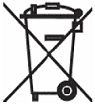
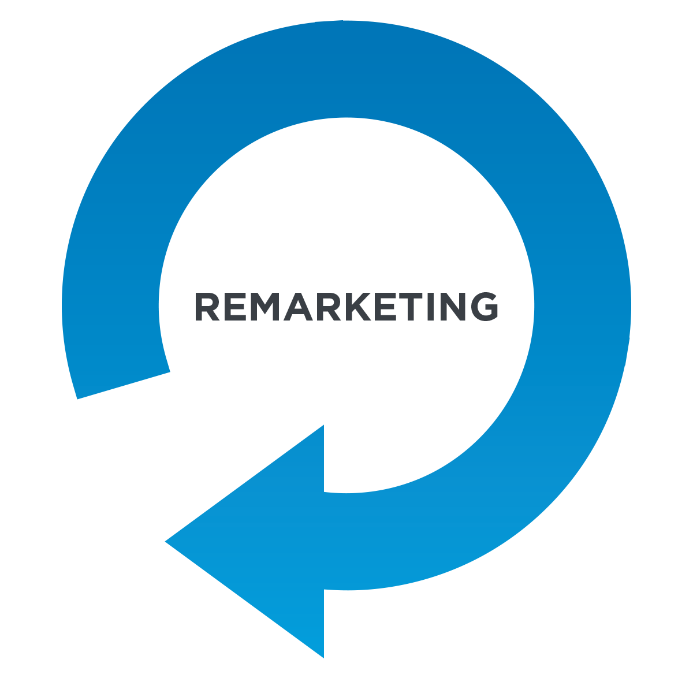

Environmental Protection
Environmentally and recycling-friendly product development
This product has been designed according to our in-house specification regarding environmentally and recycling-friendly product development.
This means that crucial criteria such as long life, choice of material and its labeling, energy efficiency, emissions, packaging, ease of disassembly and recyclability have been taken into account. This conserves resources and lessens the impact on the environment.
Saving energy
Please switch on Systems that need not be constantly running only when they are actually needed. They should also be turned off when they are not needed for longer periods of time and at the end of work.
Disposing of used consumables
Please dispose of printer consumables, used batteries as well as cleaning and maintenance materials in accordance with national regulations (where relevant complying with vendor specifications).
|
 |
Used batteries should not be disposed of as normal municipal waste within the EU (crossed-out wheeled bin symbol). The chemical names of certain pollutants, if included in the batteries, can be found underneath the symbol of the crossed-out wheeled bin. Examples here include: (Pb) lead, (Cd) cadmium and (Hg) mercury. Used batteries can be disposed of free of charge throughout the EU. |
Labels on plastic parts of the housing
Please do not stick any labels on plastic parts of the housing since that would make recycling more difficult.
Returning, remarketing, recycling and disposal
Details regarding the return and recycling of systems and consumables can be obtained from your local branch office.
Please observe the respective national regulations with regard to the disposal of electrical equipment. Electrical equipment should not be disposed of as normal municipal waste within the EU (crossed-out wheeled bin symbol). | |
 | For information regarding the possible repurchase of used systems, please contact: |